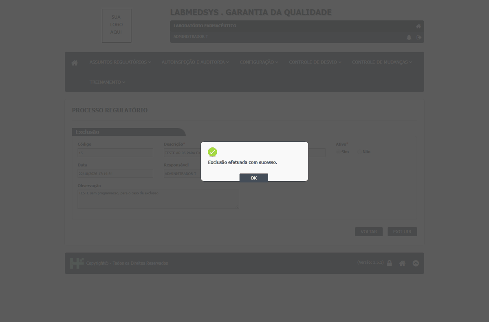
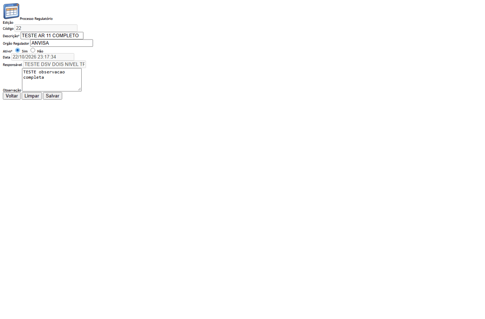
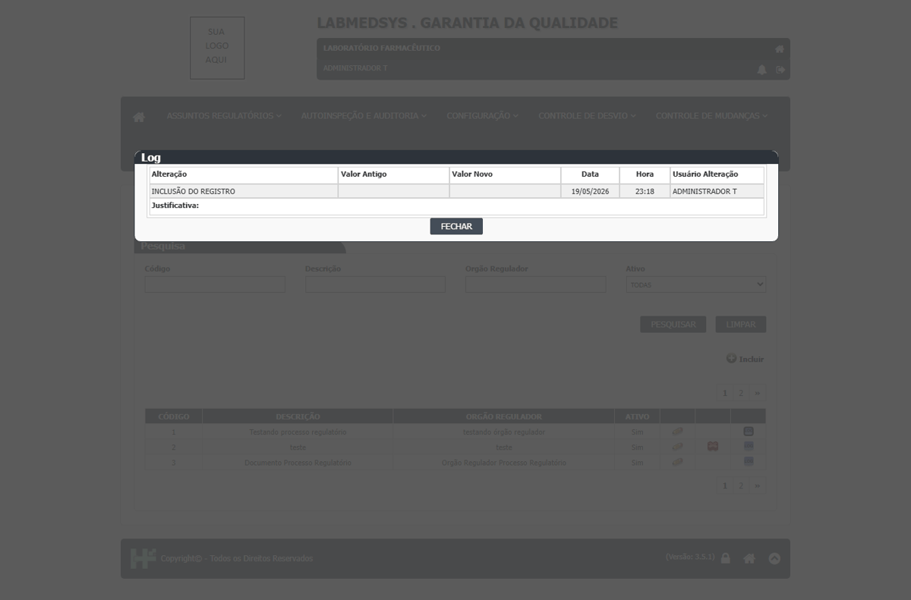
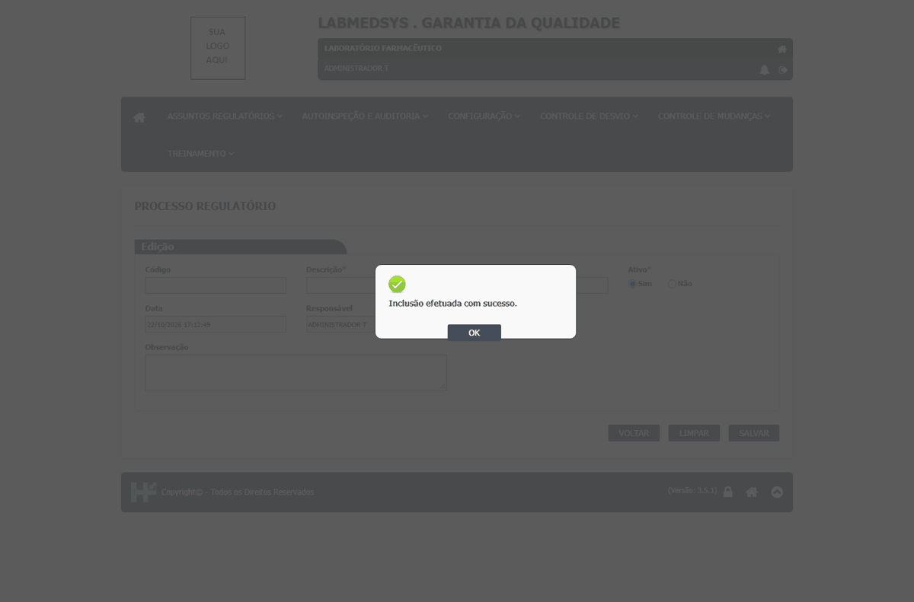
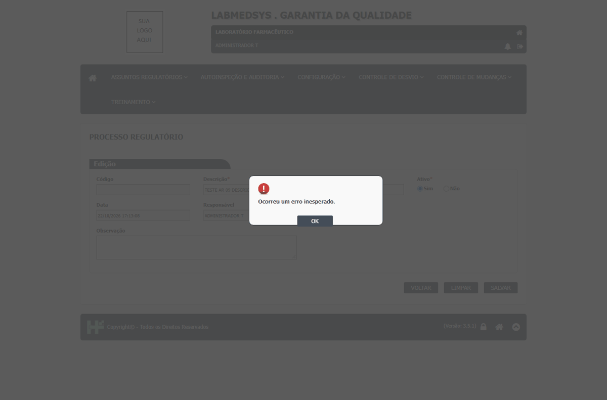

DV-GQ-200 · Excluir um processo regulatório não deixa rastro e o histórico deixa de abrir
Excluir não deixa rastro.
Como reproduzir o erro, passo a passo
- Criar processo sem programação, Excluir com justificativa, pesquisar com Ativo = Não, tentar abrir o Log.
Esperado
Exclusão no histórico com o motivo.
Obtido
O registro some e o Log dele não pode mais ser aberto; a justificativa digitada se perde.
Evidência (captura da tela)

DV-GQ-263 · O Processo Regulatório mostra como Responsável e Data quem abre e o momento, não o autor nem a data do cadastro
Ao abrir um processo criado por outra pessoa, o campo Responsável mostra quem abre e a Data é a de agora. A tela não mostra o autor nem a data do cadastro; só o histórico (Log) traz essas informações. Resultado de uma segunda sessão, com outro usuário.
Como reproduzir o erro, passo a passo
- Um usuário cria um processo regulatório.
- Outro usuário abre o mesmo processo.
Esperado
Autor e data de cadastro do processo (RN-GQ-AR01-008).
Obtido
Responsável = quem abre; Data = a de agora.
Evidência (captura da tela)


DV-GQ-201 · Processo Regulatório aceita descrição só com espaços e descrição repetida
Descrição só com espaços e descrição repetida são aceitas (o processo 18 fica em branco na lista).
Como reproduzir o erro, passo a passo
- Descrição só com espaços; depois Descrição repetida (igual a um existente).
Esperado
Recusa; registrar se o sistema aceita (RN-GQ-AR01-003).
Obtido
Descrição só com espaços: "Inclusão efetuada com sucesso." (o processo 18 aparece na lista com a descrição em branco). Descrição igual à de outro processo (TESTE AR 01 CURTO): aceita (processos 11 e 19).
Evidência (captura da tela)

DV-GQ-202 · Descrição do processo com mais de 250 caracteres dá erro sem dizer o limite
Descrição maior que 250 caracteres: "Ocorreu um erro inesperado.", sem dizer o limite.
Como reproduzir o erro, passo a passo
- Descrição de 300 caracteres.
Esperado
Aceita ou mensagem clara; registrar se aparece "Ocorreu um erro inesperado."
Obtido
Descrição de 300 caracteres: "Ocorreu um erro inesperado."; nada gravado. A tela não limita nem avisa o limite de 250 (o de 250 grava normalmente: processo 13).
Evidência (captura da tela)

DV-GQ-232 · A ordenação das listas não funciona (Assuntos Regulatórios e Controle de Mudanças)
A ordenação não funciona: o cabeçalho das colunas é um link, mas clicar uma e duas vezes não muda a ordem da lista.
Como reproduzir o erro, passo a passo
- Em uma lista de Assuntos Regulatórios ou de Controle de Mudanças, clicar uma e duas vezes no cabeçalho de uma coluna.
Esperado
A lista ordena de forma crescente e decrescente pela coluna clicada.
Obtido
Clicar uma e duas vezes no cabeçalho de uma coluna (que é um link) não muda a ordem da lista, nas três telas de Assuntos Regulatórios e na Solicitação de Mudanças.
Sem captura de tela registrada para este defeito.